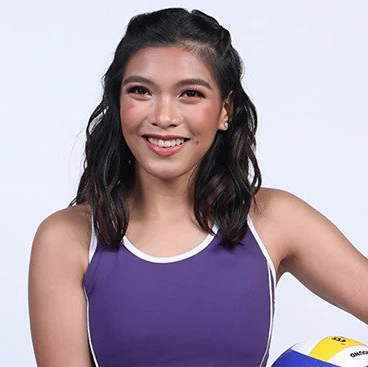

Real chemistry between Freenbecky It is the chemistry between Freen and Becky that made “Gap: The Series” possible. Despite their lack of professional training, their magical chemistry and unparalleled sincerity perfectly supported this low-budget drama. Freenbecky made this show, and this show made them. Fans adore their gentle approach to values, trust, and happiness, which goes beyond love and friendship. Many fans admit to not being obsessed with celebrities because most ambiguous videos between stars require imagination. However, Freenbecky often make fans addicted to all sorts of edited videos found online that are just so full of love.
Even known personalities admire her humility inside and outside the court. Alyssa's passion in playing volleyball gave her the best rewards in life. Her achievements as an athlete were incredibly remarkable. She ranked multiple individual awards and helped win a couple of championship titles for her college team.